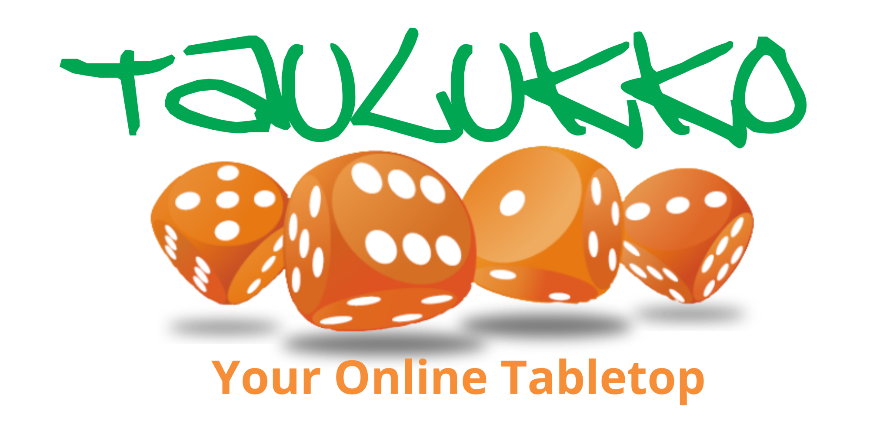

Em 2008 nasceu o Taulukko, a primeira plataforma brasileira de RPG VTT para jogar diretamente no navegador — e, muito provavelmente, uma das primeiras do mundo também. Claro, isso se não considerarmos um simples chat com rolador de dados como uma plataforma de VTT completa. Já naquela época, o Taulukko oferecia chat, rolagem de dados, gerador online de fichas de personagem e um sistema completo de fichas. Além disso, esse sistema permitia criar novos modelos diretamente no site por meio de scripts. Nos anos seguintes, vieram o grid e o gerador visual de fichas (WYSIWYG), que permitiam criar fichas estilosas apenas arrastando e soltando elementos na tela. Em 2010, o Taulukko já contava com centenas de modelos de ficha, ranking das melhores e sistema de avaliação por notas. Mas, como o projeto não tinha fins lucrativos nem qualquer forma de monetização, acabou sendo sufocado pelos custos. Quando atingimos mais de cem mil usuários, a conta dos servidores se tornou cara demais para o criador — ou seja, para mim.
Em 2022, o Taulukko foi encerrado em sua segunda versão, que tentava viabilizar o projeto cobrando apenas dos mestres. Infelizmente, recriar o Taulukko em um mercado já cheio de ferramentas pagas foi uma disputa desigual, e acabamos encerrando as atividades por falta de assinaturas suficientes. Ainda assim, sou muito grato a todos que apoiaram o projeto e se tornaram assinantes.
Apesar de ter criado, o Taulukko sempre foi um projeto comunitário, e a colaboração de todos foi essencial para seu desenvolvimento e sempre serei grato por isso.
Mesmo assim, continuamos com a vontade de colaborar com a comunidade de RPG. Por isso, seguimos tocando alguns projetos, que você encontra abaixo:
Se quiser colaborar para que continuemos produzindo conteúdo, pode adiquirir e ler nossos livros e aventuras:
Se quiser colaborar para que continuemos a produzir conteúdo, você pode nos ajudar de duas formas:
Mas como diria uma certa música famosa, "o sonho não acabou", em breve lançaremos um projeto totalmente novo e interessante e será anunciado aqui, aguardem...
Taulukko 2018-2024 pertence ao Edson Vicente Carli Junior - taulukko@taulukko.com.br